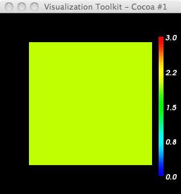

import vtk
# I can't stand the default red->blue; make a blue->red LUT
lutBlueRed = vtk.vtkLookupTable()
lutBlueRed.SetHueRange(0.667,0.0)
lutBlueRed.Build()
ren1 = vtk.vtkRenderer()
renWin = vtk.vtkRenderWindow()
renWin.AddRenderer(ren1)
iren = vtk.vtkRenderWindowInteractor()
iren.SetRenderWindow(renWin)
reader = vtk.vtkDataSetReader()
reader.SetFileName('sp2x2.vtk')
reader.Update()
srange = reader.GetOutput().GetScalarRange()
print ' range: ',srange
mapper = vtk.vtkDataSetMapper()
mapper.SetInputConnection(reader.GetOutputPort())
mapper.ScalarVisibilityOn()
mapper.SetScalarRange(srange)
mapper.SetLookupTable(lutBlueRed)
actor = vtk.vtkActor()
actor.SetMapper(mapper)
actor.GetProperty().SetInterpolationToFlat()
#actor.GetProperty().SetInterpolationToGouraud()
#actor.GetProperty().SetInterpolationToPhong()
#------------------------
scalarBar = vtk.vtkScalarBarActor()
scalarBar.SetLookupTable(lutBlueRed)
#scalarBar.SetTitle("Stress")
scalarBar.GetPositionCoordinate().SetCoordinateSystemToNormalizedViewport()
#scalarBar.GetPositionCoordinate().SetValue(0.8,0.05)
scalarBar.SetOrientationToVertical()
scalarBar.SetWidth(0.1)
scalarBar.SetHeight(0.9)
scalarBar.SetPosition(0.88,0.1)
scalarBar.SetLabelFormat("%-#3.1f")
scalarBar.GetLabelTextProperty().SetColor(1,1,1)
ren1.AddActor2D(scalarBar)
ren1.AddActor(actor)
renWin.SetSize(300,300)
renWin.Render()
iren.Start()
heiland@dhcp-cs-244-227:~/dev/vtk-stuff$ ty sp2x2.vtk # vtk DataFile Version 3.0 vtk output ASCII DATASET STRUCTURED_POINTS DIMENSIONS 2 2 1 SPACING 1 1 1 ORIGIN 0 0 0 POINT_DATA 4 SCALARS foo int LOOKUP_TABLE default 0 1 2 3
vs.
0 2 1 3

Q: why does SetInterpolationToFlat() do this? Is it possible to change it?